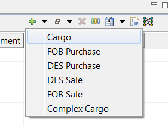
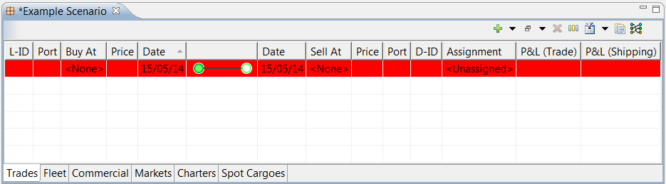

The concept of a cargo is central to the LiNGO user interface. A cargo consists of a quantity of LNG which is purchased and then sold, with each transaction occurring at a particular time and in a particular place.
The most common type of cargo modelled in LiNGO is bought FOB (link->Free On Board), loaded onto a particular vessel, shipped to its destination, and discharged in a DES (link->Delivery Ex Ship) sale. LiNGO also allows for other types of transaction to be modelled, including a divertible DES purchase at the load port, a DES purchase at the discharge port, and a FOB sale.
Types of cargo - fleet, des, fob
Ways to create a cargo (images useful)
You can create a cargo by selecting “Cargo” from the “Add” menu in the Trades tab of the scenario editor. This menu also allows the creation of individual LNG purchase or sales slots.

A newly-created cargo will have no information associated with it. You can edit its information by double-clicking on the highlighted row to bring up the Cargo Editor.
